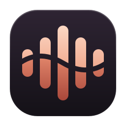
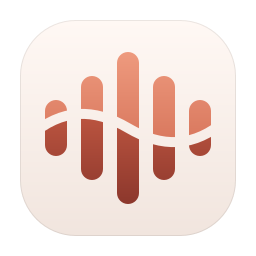
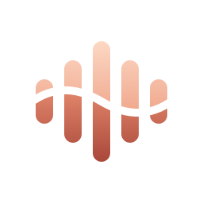

FluentFlow icon
Six directions for FluentFlow's mark, each shown large on dark and light, and at real size on a Windows taskbar (16, 20, 24, 32 and 48 px, drawn 1:1). Scored out of 5 on originality, recognisability, quality, scalability, fit with FluentFlow and fit with Windows 11. The final mark, Current, grew out of the strongest two and is shown at the end.
Final: Current
FluentFlow's mirrored visualizer, five bars whose outline is a lens, with one wave of negative space flowing through it. Above the wave the bars are warm light, below it they deepen. It keeps Signal's recognisability and its tie to the product (it is what FluentFlow draws on your taskbar) and borrows the single flowing cut from Tide and Drop, which turns a generic equalizer into a mark of its own: sound, and the flow through it. On the player's own dark surface.
- Construction. 256 grid; plate 216 with a 56 corner radius (the player card's proportion). Bars 22 wide on a 36 pitch, heights 56 / 104 / 152 / 104 / 56. The wave is two cubic curves, cut 10 wide.
- Colour. Warm #FCD8C4 to #F0A88E above the wave, #DE8268 to #A9473A below, on #2E2433 to #141117. The same peach as the player and the taskbar visualizer.
- Small sizes. At 16 to 32 px the cut would land on half pixels and crumble the short outer bars, so those sizes are redrawn on the pixel grid: whole-pixel bars, with the wave kept as the line where warm meets deep. From 40 px up the master scales as it is.
- Tray. A flat glyph, like other notification-area icons: the lens of bars alone, white for a dark taskbar, near-black for a light one.

On the taskbar, 1:1
Pixel-tuned sizes, enlarged 6× with hard pixels
Variants
 Dark theme (app icon)
Dark theme (app icon)
Light theme
Transparent, on dark
Monochrome, reversed